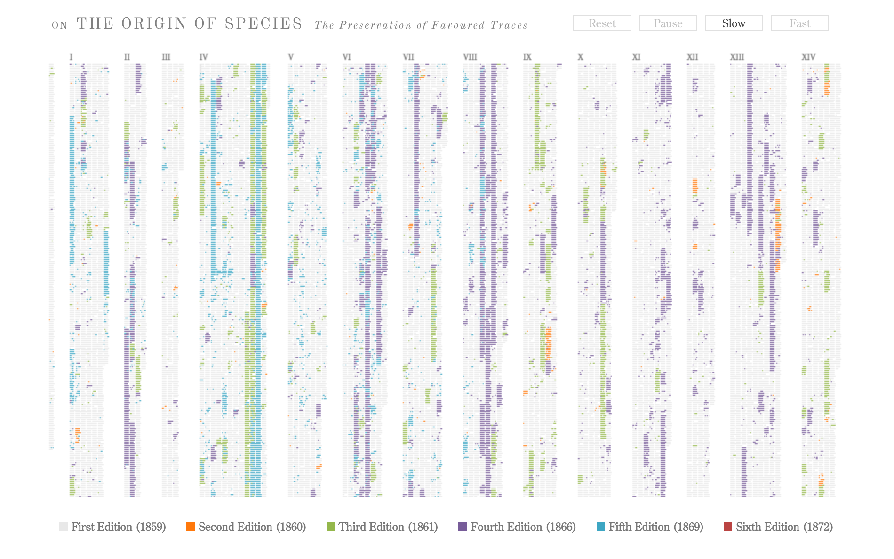

---
---

<!DOCTYPE html>
<html lang="en">
  <head>
    <meta charset="utf-8">
    <meta http-equiv="X-UA-Compatible" content="IE=edge">
    <meta name="viewport" content="width=device-width, initial-scale=1">
    <!-- The above 3 meta tags *must* come first in the head; any other head content must come *after* these tags -->
    <meta name="description" content="">
    <meta name="author" content="">
    <link rel="icon" href="../../favicon.ico">

    <title>Princeton: Visualization Workshop</title>

    <!-- Bootstrap core CSS -->
    <link href="./src/css/bootstrap.css" rel="stylesheet">

    <!-- Custom styles for this template -->
    <link href="./src/css/sticky-footer-navbar.css" rel="stylesheet">
    <link href="./src/css/preso.css" rel="stylesheet">

    <!-- Just for debugging purposes. Don't actually copy these 2 lines! -->
    <!--[if lt IE 9]><script src="../../assets/js/ie8-responsive-file-warning.js"></script><![endif]-->
    <script src="../../assets/js/ie-emulation-modes-warning.js"></script>

    <!-- HTML5 shim and Respond.js for IE8 support of HTML5 elements and media queries -->
    <!--[if lt IE 9]>
      <script src="https://oss.maxcdn.com/html5shiv/3.7.2/html5shiv.min.js"></script>
      <script src="https://oss.maxcdn.com/respond/1.4.2/respond.min.js"></script>
    <![endif]-->

  </head>

  <body>

  {% include nav.html %}

    <!-- Begin page content -->
    <div class="container">

      <div class="row snap">
        <div class="page-header col-md-3">
          <h2>Provide context</h2>
          <h4><a href="http://fathom.info/traces">The Most Detailed Election Maps You've Ever Seen</a></h4>
          <h6>New York Times</h6>
        </div>
        <div class="col-md-9">
          <iframe style="width:100%; height:580px; border:0;" src="http://www.nytimes.com/interactive/2014/11/04/upshot/senate-maps.html?_r=0"></iframe>
        </div>
      </div>

      <div class="row snap">
        <div class="page-header col-md-3">
          <h2>Establishes focus amidst complexity</h2>
          <h4><a href="http://fathom.info/traces">How the recession shaped the economy </a></h4>
          <h6>New York Times</h6>
        </div>
        <div class="col-md-9">
          
        </div>
      </div>

      <div class="row snap">
        <div class="page-header col-md-3">
          <h2>Highlight correlation</h2>
          <h4><a href="https://www.mapbox.com/labs/twitter-gnip/locals/#5/38.000/-95.000">Locals &amp; Tourists</a></h4>
          <h6>Eric Fischer</h6>
        </div>
        <div class="col-md-9">
          <iframe style="width:100%; height:580px; border:0;" src="https://www.mapbox.com/labs/twitter-gnip/locals/#5/38.000/-95.000"></iframe>
        </div>
      </div>      

      <div class="row snap">
        <div class="page-header col-md-3">
          <h2>Indicate change</h2>
          <h4><a href="http://fathom.info/traces">Rise of Men who don't work</a></h4>
          <h6>New York Times</h6>
        </div>
        <div class="col-md-9">
          
        </div>
      </div>

      <div class="row snap">
        <div class="page-header col-md-3">
          <h2>Relate multiple scales of information</h2>
          <h4><a href="http://fathom.info/traces" target="_blank">The Preservation of Favored Traces</a></h4>
          <h6>Fathom.info</h6>
        </div>
        <div class="col-md-9">
          
        </div>
      </div>

      <div class="row snap">
        <div class="page-header col-md-3">
          <h2>Convey narrative</h2>
          <h4><a href="http://fathom.info/traces" target="_blank">U.S. Gun Killings</a></h4>
          <h6>Periscopic</h6>
        </div>
        <div class="col-md-9">
          
        </div>
      </div>

    </div>

    <footer class="footer">
      <div class="container text-center">
        <p class="text-muted"><a href="tools.html">Where do I start?</a></p>
      </div>
    </footer>


    <!-- Bootstrap core JavaScript
    ================================================== -->
    <!-- Placed at the end of the document so the pages load faster -->
    <script src="https://ajax.googleapis.com/ajax/libs/jquery/1.11.2/jquery.min.js"></script>
    <script src="../../dist/js/bootstrap.min.js"></script>
    <!-- IE10 viewport hack for Surface/desktop Windows 8 bug -->
    <script src="../../assets/js/ie10-viewport-bug-workaround.js"></script>
  </body>
</html>
